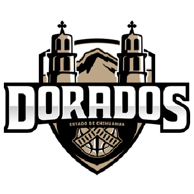
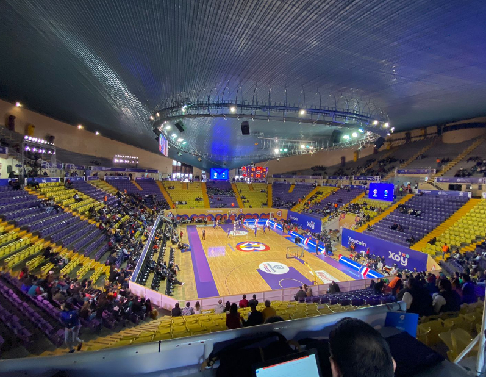

CNMB
| Escudo |
|---|
|  |
| Datos |
| Nombre: Dorados de Chihuahua Anio de Fundación: 1931 Ciudad: Chihuahua, Chihuahua Estadio: Gimnasio Manuel Bernardo Aguirre Capacidad: 10,530 Sitio web: http://www.doradosdechihuahua.com.mx/ |
| Historia |
|
Originalmente surgieron en el año de 1931 como un equipo amateur que competía en los campeonatos nacionales y llegando a obtener 18 campeonatos en esa liga, haciéndolo uno de los equipos mas exitosos de dicha competición, después en los 80s se unio al Circuito Mexicano de Basquetbol donde obtuvo 3 campeonatos, desde el año 2000 y hasta la actualidad el equipo milita en la LNBP. |
| Estadio |
|  |